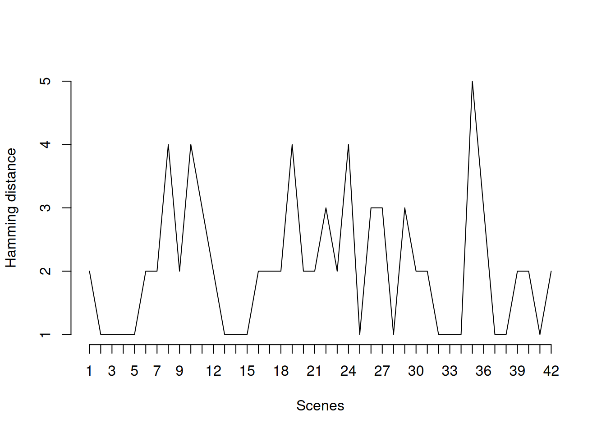
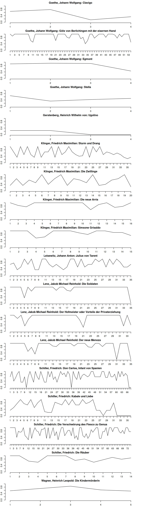

9 Character Exchange
Character exchange – entering and leaving the stage – often takes place at scene boundaries. We offer multiple ways to measure and visualize this exchange over the course of the play.
9.1 Hamming Distance
The hamming distance has been introduced in information theory by Richard Hamming (Hamming 1950). Intuitively, the hamming distance expresses the number of characters that either enter or leave the stage. Its application to a dramatic text is straightforward, using the function hamming(). By default, the hamming distance is calculated over scene boundaries.
hamming(rksp.0, variant="Hamming")## [1] 2 1 1 1 1 2 2 4 2 4 3 2 1 1 1 2 2 2 4 2 2 3 2 4 1 3 3 1 3 2 2 1 1 1 5 3 1 1
## [39] 2 2 1 2
## attr(,"class")
## [1] "QDHamming" "numeric"The return value of the function is just a vector of numbers, one less than the number of scenes in the play. Of course, this can be plotted:
plot(hamming(rksp.0, variant="Hamming"),
type="l",
ylab="Hamming distance",
xlab="Scenes")
Hamming distance, in its original definition as well as the Hamming variant in our function, returns absolute values. As usual, these values should be normalized, and the function hamming() provides two ways of doing that.
9.1.1 NormalizedHamming
Straightforwardly, one can normalise by the overall number of characters in the play. This value is only maximal, if at once scene boundary, one subset of characters enters the stage, and the entire other subset leaves the stage. As we can see below, this is not the case in our demo text.
hamming(rksp.0, variant="NormalizedHamming")## [1] 0.15384615 0.07692308 0.07692308 0.07692308 0.07692308 0.15384615
## [7] 0.15384615 0.30769231 0.15384615 0.30769231 0.23076923 0.15384615
## [13] 0.07692308 0.07692308 0.07692308 0.15384615 0.15384615 0.15384615
## [19] 0.30769231 0.15384615 0.15384615 0.23076923 0.15384615 0.30769231
## [25] 0.07692308 0.23076923 0.23076923 0.07692308 0.23076923 0.15384615
## [31] 0.15384615 0.07692308 0.07692308 0.07692308 0.38461538 0.23076923
## [37] 0.07692308 0.07692308 0.15384615 0.15384615 0.07692308 0.15384615
## attr(,"class")
## [1] "QDHamming" "numeric"9.1.2 Trilcke
One more possible normalization has been proposed by Trilcke et al. (2017). Instead of normalizing with all characters in the play, the Trilcke variant only normalizes with the characters in the two adjacent scenes. Thus, if all characters leave the stage, and a new set of characters enter it, the distance is maximal. This however does not have to include all characters in the play.
hamming(rksp.0, variant="Trilcke")## [1] 0.6666667 0.5000000 0.5000000 0.5000000 0.5000000 0.6666667 0.6666667
## [8] 1.0000000 0.6666667 1.0000000 0.7500000 0.6666667 0.5000000 0.3333333
## [15] 0.3333333 0.5000000 0.5000000 0.6666667 1.0000000 0.6666667 0.6666667
## [22] 0.7500000 0.5000000 0.8000000 0.3333333 0.7500000 0.7500000 0.3333333
## [29] 0.7500000 0.6666667 0.6666667 0.3333333 0.3333333 0.3333333 1.0000000
## [36] 1.0000000 0.5000000 0.5000000 0.6666667 0.6666667 0.5000000 0.5000000
## attr(,"class")
## [1] "QDHamming" "numeric"The Trilcke variant is the default setting of the hamming()-function.
9.2 Corpus Analysis
sturm_und_drang.ids <- c("qd:11f81.0", "qd:11g1d.0", "qd:11g9w.0",
"qd:11hdv.0", "qd:nds0.0", "qd:r12k.0",
"qd:r12v.0", "qd:r134.0", "qd:r13g.0",
"qd:rfxf.0", "qd:rhtz.0", "qd:rhzq.0",
"qd:rj22.0", "qd:tx4z.0", "qd:tz39.0",
"qd:tzgk.0", "qd:v0fv.0", "qd:wznj.0",
"qd:tx4z.0", "qd:rfxf.0")
sturm_und_drang.plays <- loadDrama(sturm_und_drang.ids)Since determining character exchanges at scene boundaries is not a multi-play task, the function hamming() does not allow QDDrama objects that contain multiple plays. It’s still possible to calculate the exchanges for many plays though, using split() and lapply(). split() is a function defined in the DramaAnalysis package and can be used to split up a QDDrama object if it contains multiple plays. It returns a list of individual objects. This list is then fed into the function lapply(), which applies the function hamming() on each element of the list.
profiles <- lapply(split(sturm_und_drang.plays), hamming, variant = "Trilcke")The result of this is a list that contains an entry for each play, which in turn reflects the distances at specific scene boundaries. Thus, the lists have different lengths, as the plays have different lengths. We apply the same trick with lappy() to create plots of all the plays. Instead of calling a pre-existing function (as before with hamming()), we define a new (anonymous) function. This is mainly to allow printing the authors and names of the play into the plots.
par(mfrow=c(length(profiles),1), mar=c(2,2,2,2))
lapply(names(profiles),
function(x) {
plot(profiles[[x]], # take the data
type="l", # we print lines
ylab="Character exchange rate", # y axis label
ylim=c(0,1), # y axis scale
# create nice labels
main=paste(sturm_und_drang.plays$meta[drama==x,]$Name,
sturm_und_drang.plays$meta[drama==x,]$documentTitle,
sep=": ", collapse=": ")
)
}
)